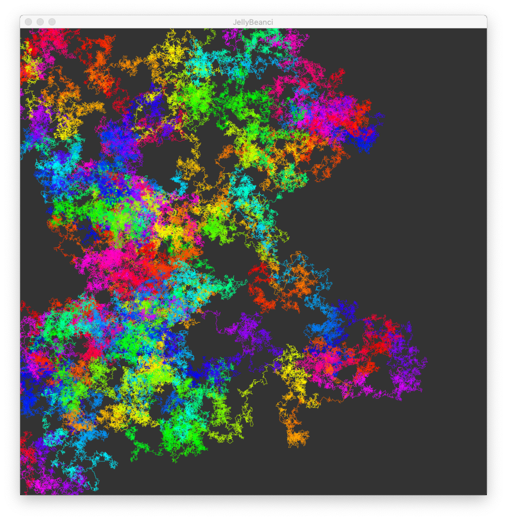
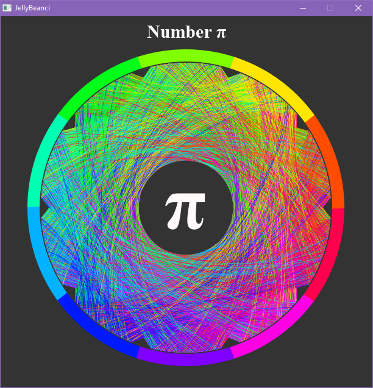
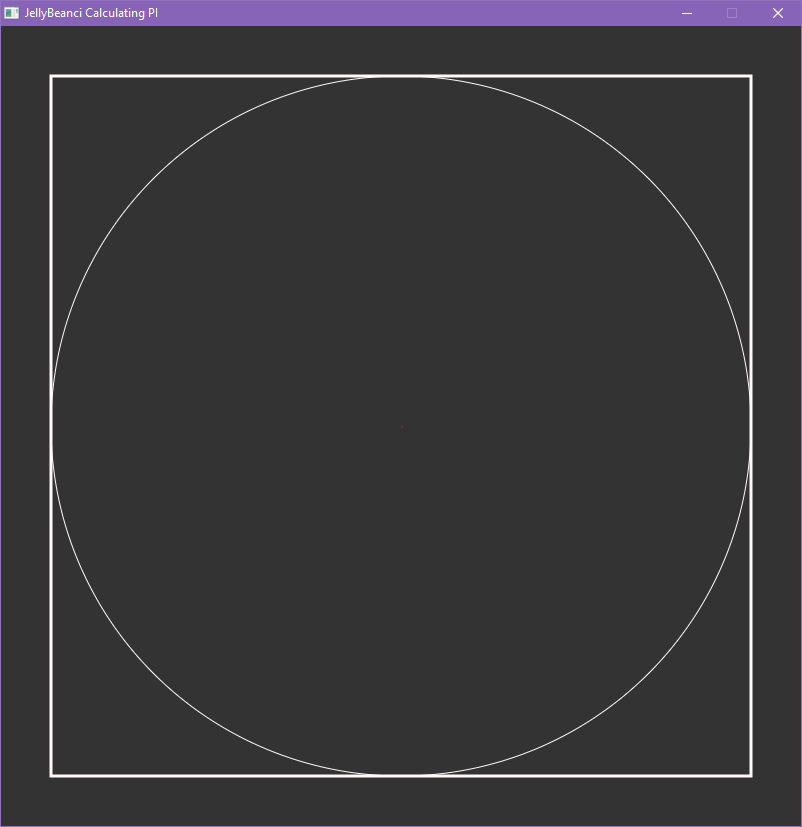
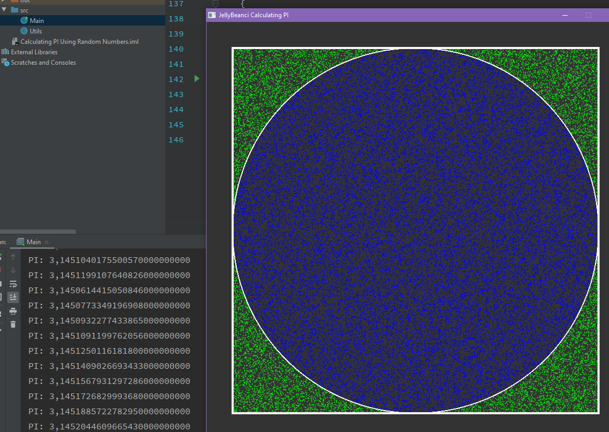
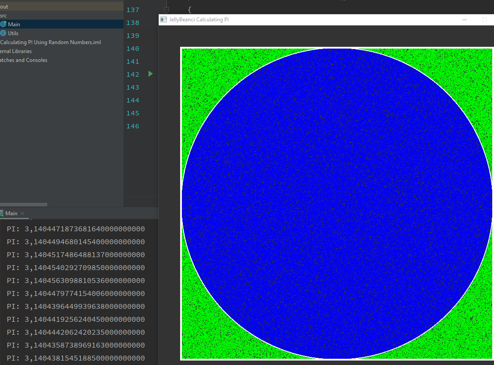
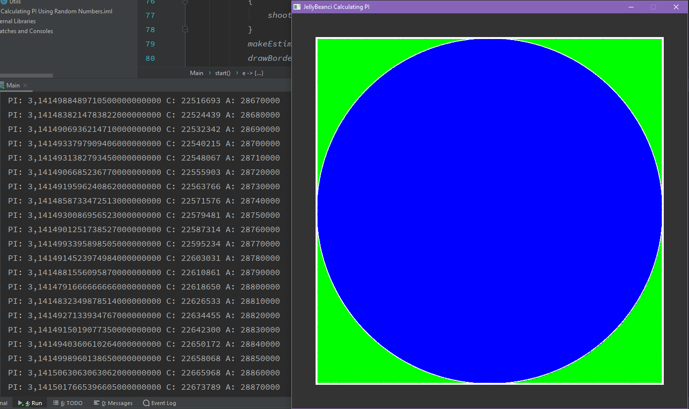

Pi sayısı (π), bir dairenin çevresinin çapına bölümü ile
elde edilen irrasyonel matematik sabiti'dir. İsmini,
Yunanca περίμετρον (çevre) sözcüğünün ilk harfi olan π
den alır.
Pi sayısına özel bir ilgi duyduğum için fazlaca Pi
Sayısı üzerine projelerim mevcut. En sevdiğim üç
tanesini aşağı kısımda paylaşmak isterim.
Pi Walker

Pi sayısının ilk 1 milyon basamağının her bir digite
0-360 arasında bir açı vererek gitti yolu görselleştiren
bir çalışma.
Animasyon yapıda olduğu için fotoğraftan pek bir olayı
yok gibi görüyor. Projeyi çalıştırıp canlı olarak
görmenizi tavsiye ederim.
Pi Pattern

Bir önceki çalışma ile benzer olarak ilk 1 milyon digit
ile yapılmış bir çalışma.
Bu sefer her rakama farklı bir renk ve açı verip
digitler arasındaki geçişi görselleştirdim.
Yine benzer şekilde bakmak değil izlemesi hoş olan bir
çalışma. Çalıştırıp denemenizi tavsiye ederim.
Calculating Number Pi with Darts

Pi sayısı kare içerindeki daire'de gizli.
Bir kenarı 2r olan karenin alanı 4r², içerisine
yerleştirilen teğet dairenin alanı ise πr².
Buna göre dairenin alan覺 karenin alanlar覺n覺n oran覺 /
4'tür.
Başlangıçta boş bir kare içerisinde bir daire
bulunmakta. Her bir adımda random olarak bir x ve y
noktasına Dart atılma. Ve atılan Dartın daire içerisinde
olup olmadığı kontrol edilir. Eğer içerisinde ise C
değeri artırılır. Ve bu değer bölü toplam atılan Dart
say覺s覺 say覺s覺n覺n 1/4'ne eittir.



Başlangıçta biraz uzak olsa bile belli bir süre sonra
asıl değere baya yakın bir sonuç elde edilir.